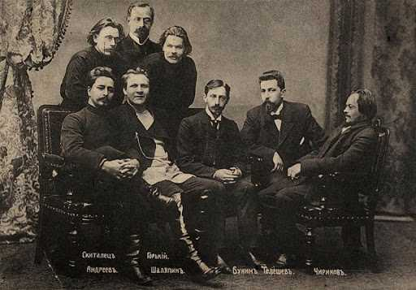

Усадьба Телешовых
Усадьба Телешовых находилась около искусственного водоёма, который был выкопан в XIX в. Поэтому дачу назвали «Озеро».
Имение было куплено купцом Николаем Дмитриевичем Телешовым в августе 1902 года. В 1903 году шло строительство деревянного дома. Земля была большая, поэтому там были дома для гостей. Также Телешовы сдавали землю под дачи, с этого они имели доход. Дачи очень подходили для семейного, тихого отдыха и для творческих людей, которые нуждались в уединении. В основном, на дачах жили летом, а зимой уезжали. Спустя время, чтобы была возможность проводить там и зимние месяцы, был построен каменный флигель. Сад-цветник доходил до озера. Имение «Озеро» мы можем сейчас увидеть на картинах Елены Андреевны Телешовой.
Николай Телешов был не только купцом, но и писателем и благотворителем. В 1899 году Николай Телешов создал литературный кружок «Среда», который собирался преимущественно в его усадьбе на Покровском бульваре. На его заседаниях бывали:
- Л.Н.Андреев
- К.Д.Бальмонт
- В.Я.Бунин
- И.А.Бунин
- А.С.Серафимович
- В.В.Вересаев
- А.М.Горький
- А.П.Чехов
- Ф.И.Шаляпин
- С.В.Рахманинов
- И.Е.Репин
- В.М.Васнецов
В 1913 году «Среда» стала творческим союзом.
